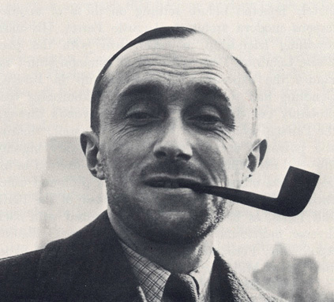
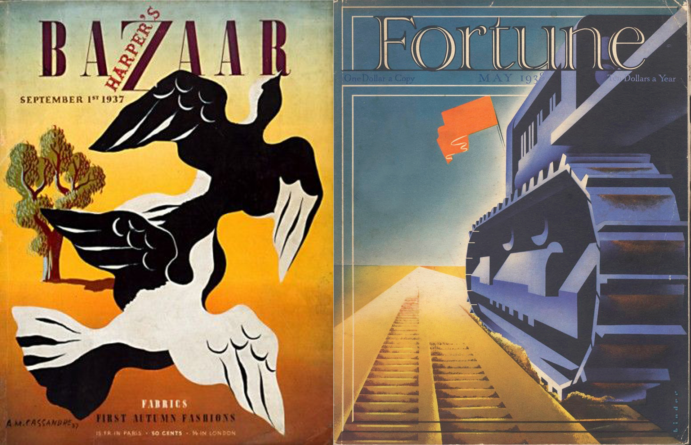

"Es difícil determinar cual es el lugar que le corresponde al cartel entre las artes pictóricas. Únicamente se exige de él que establezca una clara, poderosa y precisa comunicación."
Adolphe Jean-Marie Mouron, conocido por el seudónimo de Cassandre, fue un cartelista y diseñador gráfico. Con él se inaugura la figura del diseño gráfico como tal. Desarrolló su carrera en el mundo de la publicidad, la moda, el teatro..., aunque sin duda en lo que más destacó fue en la publicidad. Su método es esencialmente geométrico y monumental, se mueve en una estética un tanto cubista.
¿Quieres saber algo más de él?
Nacido en Járkov, Ucrania el 24 de enero de 1901, de padres franceses, siendo joven se mudó a París donde estudió en la Academia de Bellas Artes y en la Academia Julian.
En sus obras se puede observar la influencia de las vanguardias artísticas de la época de entreguerras del siglo XX, como el cubismo, el purismo de Le Corbusier, e incluso el futurismo con los recursos gráficos líneas cinéticas y sensación de velocidad.
En los años 20 y 30 fue uno de los diseñadores de afiches más admirado en Francia, integrando la llamada Alliance Graphique junto a Charles Loupot y Maurice Moyrand.
Trabajó en Estados Unidos, creando las cubiertas de revistas como Harper´s Bazaar y Fortune.
De regreso a Francia creó escenografías y vestuarios teatrales, intentando ampliar su campo a la pintura.
En 1968 trás un par de intentos fallidos se quitó la vida en su apartamento de París a los 67 años.
Ahora ya sabes algo más de él, aunque seguramente ya conocías uno de sus trabajos.
Mueve el ratón por el espacio en blanco de abajo.
Conoces el logotipo que diseño. ¿Verdad? Es uno de los trabajos más famosos del diseñador, junto con las iniciales de la misma marca, YSL, entrelazadas. Ambos trabajos, han perdurado desde principios de los 60 hasta la actualidad.
Desde hace unos años con la llegada del diseñador Heidi Simane, el logotipo YSL desapareció tal y como se conocía. En su línea de prêt-à-porter desapareció el nombre Yves Saint Laurent por Saint Laurent Paris. Aunque el logo YSL con las letras entrelazadas se mantuvo el logotipo tipográfico es muy diferente como se puede apreciar en la siguiente comparativa.